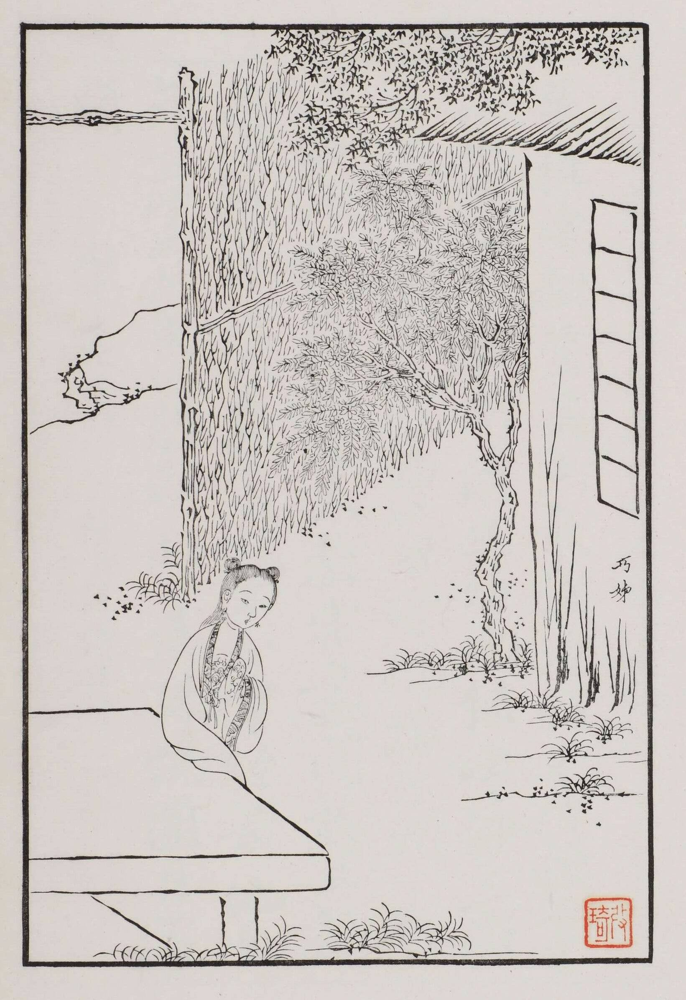
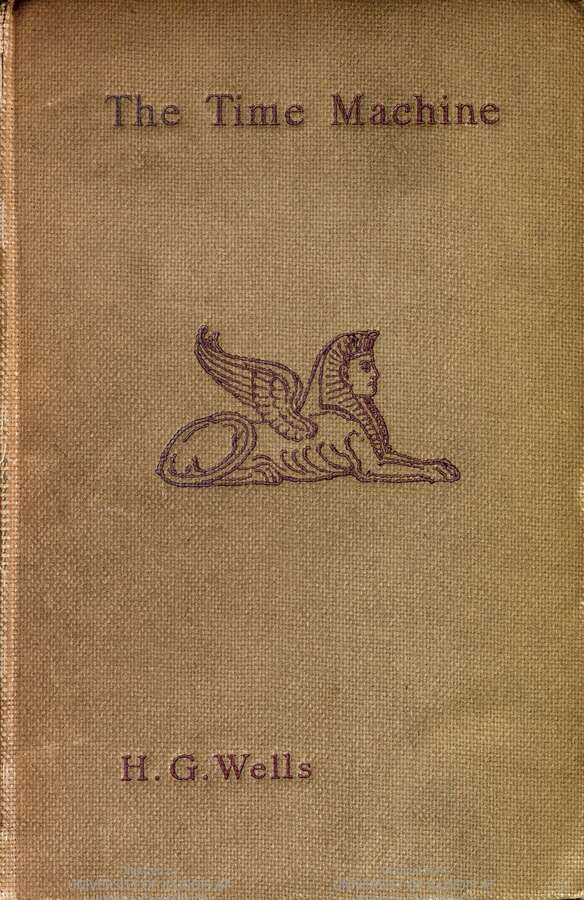

图书列表
以下为更贴近真实馆藏结构的示例数据，包含封面、书名、作者、分类与简要内容简介，便于读者快速了解每本图书的主题与特色。
-
红楼梦（文学类）
作者：曹雪芹

中国古典小说巅峰之作，通过贾宝玉与林黛玉等人的悲欢离合，折射封建家族由盛转衰的全过程，被誉为“封建社会的百科全书”。
-
活着（文学类）
作者：余华

以普通农民福贵一生的命运为主线，在时代巨变与家庭悲剧中展现人面对苦难仍选择活下去的坚韧与尊严，语言克制而有力量。
-
杀死一只知更鸟（文学类）
作者：哈珀·李
以美国南方小镇为背景，通过一位律师为黑人辩护的案件，揭示种族偏见与正义勇气，被誉为二十世纪最重要的英语小说之一。
-
计算机网络（第7版）（科技类）
作者：谢希仁

国内经典网络教材，从概述、物理层、数据链路层到网络层、运输层、应用层系统讲解计算机网络基础知识，适合作为高校课程与自学参考。
-
算法导论（科技类）
作者：Thomas H. Cormen 等

国际知名算法教材，系统介绍排序、数据结构、图算法、动态规划等核心内容，注重算法正确性与复杂度分析，是计算机专业进阶必读书目之一。
-
时间机器（科幻类）
作者：H. G. Wells

科幻文学经典之作，讲述一位时间旅行者穿越到未来世界的冒险与思考，对阶级分化和人类命运进行了寓言式的想象。
-
教育心理学（教育类）
作者：插入实际作者

从学习动机、认知发展到课堂管理，探讨心理学原理在教学中的应用，帮助教师理解学生行为并优化教学策略。
-
设计中的设计（艺术类）
作者：原研哉

日本设计师原研哉代表作，通过实际案例讨论“空白”“信息与感知”等设计哲学，深入剖析日常物品背后的设计思考过程。
-
人类简史（人文类）
作者：尤瓦尔·赫拉利

以宏大视角梳理智人从认知革命到科技革命的演化历程，提出“虚构”“合作”等概念，帮助读者重新思考人类社会的形成与未来走向。